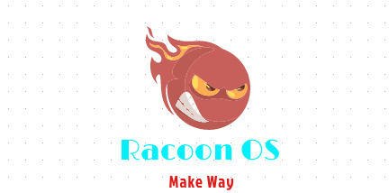
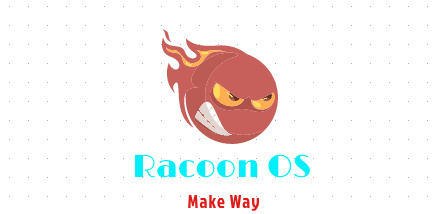

At TaskMaster, we believe ones maximum potential can never be But that's not it, we plan to do way more than thatEvery upcoming task you have, simply key it into our beta tester availabe below and it will automatically push it onto your phone |
|---|
With a plethora of tasks to manage everyday, you're bound to forget a couple of them.Why don't
|
|---|


 
